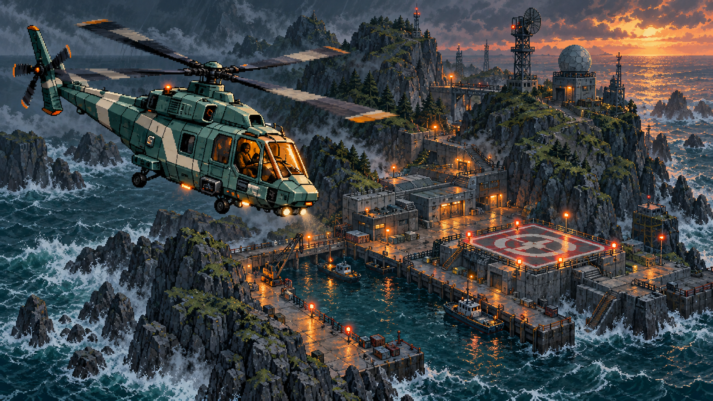

Destroy the coastal radar.
Echo Seven, clear the radar. Keep moving when you fire.

01 / OPERATION LANTERN
The island has gone dark.
Bring its people home.
An armed force holds the flood barrier. Clear the radar. Rescue the engineers. Restore control before the harbor is lost.
Limited supplies. Full enemy damage. Checkpoints at mission milestones.